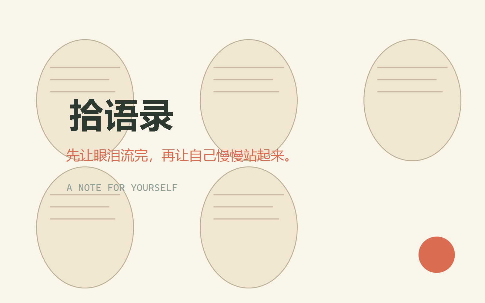

此刻的一句
慢一点也没关系，你不必现在就解决所有问题。
It is okay to move slowly. You do not have to solve everything now.
治愈 · 慢慢来

A NOTE FOR THIS MOMENT
选一种需要，档案馆会从一千多句话里，为你拾起更贴近此刻的一句。
慢一点也没关系，你不必现在就解决所有问题。
It is okay to move slowly. You do not have to solve everything now.
A NOTE FOR YOURSELF
治愈 · 温柔
今天先照顾自己，再照顾世界。
你已经走了很远，今晚可以慢一点。
THE DAILY NOTE
你坚定地走向我，我热烈地回应你。
You walk firmly toward me, and I respond to you with all my warmth.
EXPLORE BY FEELING
THE COLLECTION
EDITOR'S PICKS
SMALL STORIES
THEME OF THE MONTH
TOGETHER
大家投来的句子，会先出现在这里，再被编辑拾起。
LEAVE A NOTE
把它留在这里。也许，它刚好会成为另一个人今天需要的答案。
ABOUT SHI YU LU
拾语录是一间开放的句子收藏室。我们相信，文字不必宏大，它只需要在恰好的时刻，轻轻落进一个人的心里。每一句被拾起的语录，都曾照亮过某个人的某一天。